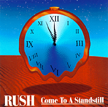

COME TO A STANDSTILL
Flashback Worldproductions
Flash 05.94.0230/1/2
(71:01) (72:05)
Recorded: (Disk 1, Disk 2: 1-8)
March 2, 1994
Coliseum. Jacksonville, FL
Recorded: (Disk 2: 9-12)
May 21, 1986
Seattle Center Coliseum. Seattle, WA
Track Listing (Disk 1):
Dreamline || The Spirit Of Radio || The Analog Kid || Cold Fire || Time Stand
Still || Nobody's Hero || Roll The Bones || Animate || Stick It Out || Double
Agent || Limelight || Mystic Rhythms || Closer To The Heart
Track Listing (Disk 2):
Show Don't Tell || Leave That Thing Alone || The Rhythm Method || The Trees ||
Xanadu || Tom Sawyer || Force Ten || YYZ || Manhattan Project || Middletown
Dreams || Red Sector A || Marathon
Sound Quality: ?
Packaging: ?
No review yet